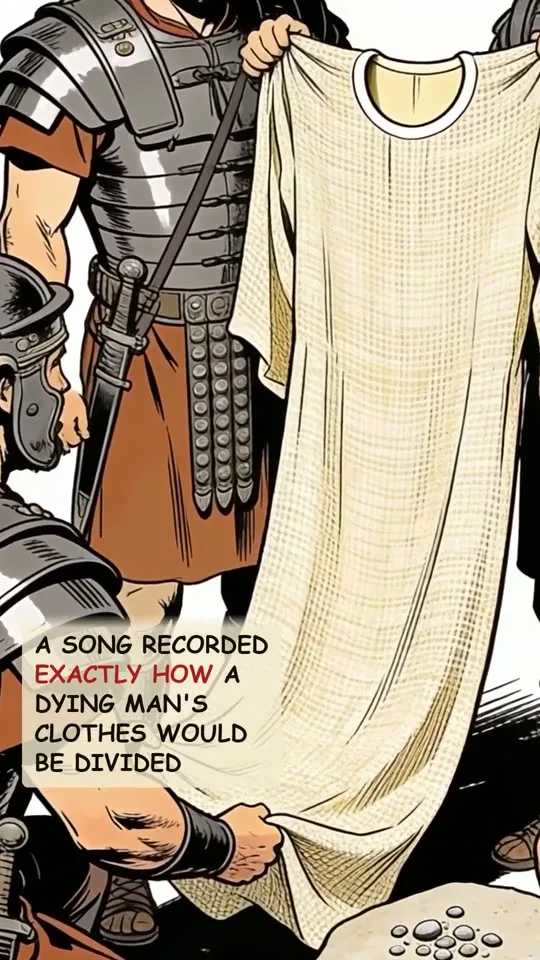
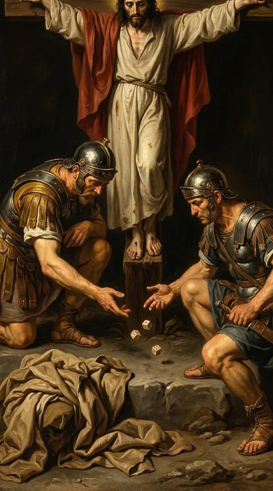
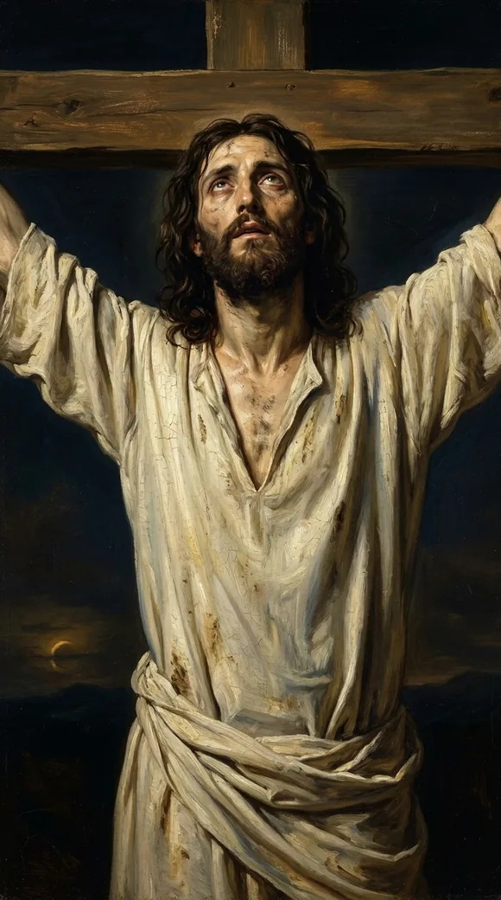

Video will be on YouTube when the series launches.
Psalm 22:18. They part my garments and cast lots. John records the soldiers doing exactly that.
The study behind this
Psalm 22 is a cry of King David, set down roughly a thousand years before Christ. It opens in the voice of a man surrounded and abandoned, then bends, line by line, toward a suffering David himself never endured and a rescue that reaches the ends of the earth.
The reading
Ten centuries before the cross, a song recorded exactly how a dying man's clothes would be divided up.
Psalm twenty-two. David wrote it in the first person, but David himself was never executed; he died an old man. He was describing someone else: stripped, surrounded, his life poured out.

Watch one line, he wrote that the dying man's killers would divide his clothes, and cast lots for them:
They part my garments among them, and cast lots upon my vesture.
Psalm 22:18

A thousand years later, John watched it at the cross, soldiers dividing Jesus' clothes, then casting lots for the seamless coat, "that the scripture might be fulfilled".

A thousand years early, God had it written down, so when it happened, you'd know the cross was no accident. It was the plan.

The suffering man of Psalm twenty-two has a name: Jesus. They rolled dice for the clothes off His back, never seeing what He was really doing, laying down His life to win you back.
Every quotation is the King James Version, verified word for word against the text.